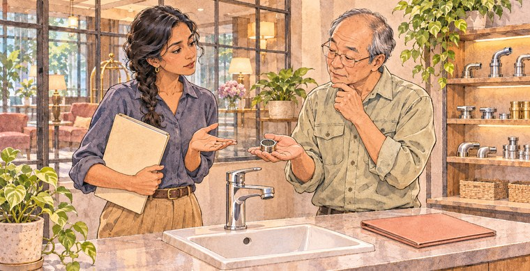

SUS-13 · 香港 · 10–15分钟 · 负责任的水资源管理 · 集水区背景 · 资源分配
节省一升水，在哪里省？

行业背景
2025年6月1日，香港特区政府的一篇专题报道介绍了用水效益专队计划（Water-smart Taskforce Programme），以及酒店如何参与监测用水规律。报道指出，测量用水情况并有针对性地跟进，有助于找出节水机会。
这篇报道不能用来判定下述两家酒店的节水量或水资源压力排名。两家酒店、各自的供水系统以及所有项目数据均为虚构。案例并未将香港或亚洲任何真实地点认定为存在水资源压力。
课堂决策
一家总部位于香港的酒店集团有两家虚构的酒店，分别位于亚洲两个未具名的供水区域：Harbour House 和 Valley House。今年，集团有60,000港元，只够实施一套完整、不可拆分的节水改造方案。每套方案的费用均为60,000港元整，包括由合资格人员安装，以及首年的维护和监测。两套方案都能在下一个旱季前完成安装。任何一套都不能拆分或只做一部分，本轮也没有资金同时实施两套方案。
两套方案都采用经过评估的节水配件，同时保持原有的服务水平，确保服务安全合规，卫生和住客舒适度不变。现有设备仍可正常使用，必要的维修和安全防护措施已有资金保障，目前也没有紧急情况或限量供水义务要求必须实施其中某个项目。要决定的是先资助哪一项额外改进，而不是要不要限制基本用水。
在设定的入住率和服务水平下，预计首个完整运营年度，Harbour House 可少用900立方米的外供淡水，Valley House 则可少用600立方米。一立方米等于1,000升。这里估算的是两家酒店各自的淡水进水表读数相对于不改造基准的减少量，并非实测结果、整个流域的节水量，也不是扣除排水后的净耗水减少量。估算未假定有反弹效应、业务外包或服务缩减。对于节水总量和缓解当地水资源压力，经理尚未确定哪一项优先。
| 首个完整运营年度 | Harbour House | Valley House |
|---|
| 完整项目成本 | HK$60,000 | HK$60,000 |
| 预计进水减少量 | 900 m³ | 600 m³ |
| 折合升数 | 900,000 | 600,000 |
| 服务与合规 | 维持不变 | 维持不变 |
你的决策你会先资助 Harbour House 还是 Valley House 的项目？在项目成本相同的情况下，比较预计每年可减少的淡水进水量。在认定节水总量更大的方案更符合负责任的水资源管理之前，你还想了解哪些当地情况？
第二轮 · 多了一项资料
一份虚构的当地供水评估补充说明了节水发生在何处、何时。Harbour House 由一个拥有多个可用水源的管网供水；按评估采用的运行假设，该管网为旱季安排的储备足够。实施方案后，即将到来的四个月旱季可减少100 m³的用水需求，其余月份可减少800 m³。
Valley House 由另一套系统供水。这套系统依赖一座季节性水库，酒店与居民家庭及其他企业共用这一水源。运营方的评估发现，旱季的供水余量要小得多，因此请商业用户在旱季到来之前主动减少可以避免的用水需求。目前没有用水限制，也没有紧急情况。这套方案可在同样的四个月内减少400 m³的用水需求，其余月份减少200 m³。与当地用户的讨论证实，减少这几个月的用水需求是大家共同的优先事项。
这些虚构的当地调查结论不是全球地图上的评分。它们可以用来比较当地供水形势，却不能用来精确估算停水概率。两个项目的成本、服务和年度估算均保持不变。现有证据并未表明任何一个项目能够防止某次具体的缺水、多给某户居民供水，或每少进一升水就让水源地少取一升。排水和生态系统影响、水费节省额以及整个使用寿命内的收益均未量化。不要自行设定水资源稀缺性乘数，也不要编造货币收益或通用的环境评分。
你的决策你会坚持原来的项目选择，还是改选？比较年度和旱季的节水量，说明你的建议优先考虑什么目标，并举出一项现有证据不足以支持的收益主张。
先按同一口径比水量
Harbour House 预计每年节水900,000升，Valley House 则为600,000升。两个项目成本同为60,000港元，Harbour 每年可多减少300,000升进水量，比 Valley 多50%。如果明确的目标是让首年的进水量降幅最大，那么在两个方案中，Harbour 仍然更占优势。案例没有给出水价或使用寿命，所以这不是投资回收测算。
再看节水发生在什么情况下
预计旱季节水量，Harbour 为100,000升，Valley 为400,000升。在已识别的供水承压时段，Valley 的节水量是 Harbour 的四倍，而且 Valley 所在的供水系统储备更少，当地用户也一致认为这段时间应优先节水。不过，Valley 的全年节水总量仍然较低。一升水在两地的体积一样，但它可能帮助缓解的压力不一定相同。
明确优先目标，不凭空打分
如果本轮明确以首年预计进水量降幅最大为准，就选 Harbour，同时承认 Valley 当地的节水重点。如果应对已有证据支持的季节性供水压力，比 Harbour 每年能多节省的300,000升水更重要，就选 Valley。把这一权衡说清楚。无论选哪一个，都不能用未给出的水价、通用的风险乘数，或“缺水问题会彻底消失”这样的说法来推导结论。
沿着水的来路和去向追踪
以按入住率和服务水平调整后的基准为参照，跟踪进水表读数的减少量，并按季节分别记录。还要弄清水从哪里来、排到哪里去，咨询供水运营方和当地用户，并核实供水形势是否有变。进水表计量的取水量下降，并不必然意味着净耗水减少、集水区取水减少，或生态系统出现可量化的恢复。Harbour 供水有保障，并不意味着在那里节水没有价值。
教师说明
先让学生根据全年节水量投票，再公布当地供水和季节性证据。请学生先说清优先目标，再为最终选择辩护。不要仅因学生改选 Valley 就给分：如果明确以全年节水量为目标，Harbour 仍然更合适。注意区分实际计量的物理量、当地的优先事项和预测结果。这道题不是要学生决定如何满足强制合规要求，也不涉及水权争议或健康方面的权衡。全球风险工具可以帮助做初步筛查，但不能替代有关当地水源、季节和利益相关方的证据。案例没有提供任何真实地点的评级、停水概率或货币化的社会收益。与讨论用电时段的案例不同，本案例没有统一的排放因子，也没有可加总的影响评分；课堂任务是在几个都合理但彼此竞争的目标之间作出取舍，结合当地情况分配资金，落实负责任的水资源管理。
第二轮
一份虚构的当地供水评估补充说明了节水发生在何处、何时。Harbour House 由一个拥有多个可用水源的管网供水；按评估采用的运行假设，该管网为旱季安排的储备足够。实施方案后，即将到来的四个月旱季可减少100 m³的用水需求，其余月份可减少800 m³。
Valley House 由另一套系统供水。这套系统依赖一座季节性水库，酒店与居民家庭及其他企业共用这一水源。运营方的评估发现，旱季的供水余量要小得多，因此请商业用户在旱季到来之前主动减少可以避免的用水需求。目前没有用水限制，也没有紧急情况。这套方案可在同样的四个月内减少400 m³的用水需求，其余月份减少200 m³。与当地用户的讨论证实，减少这几个月的用水需求是大家共同的优先事项。
这些虚构的当地调查结论不是全球地图上的评分。它们可以用来比较当地供水形势，却不能用来精确估算停水概率。两个项目的成本、服务和年度估算均保持不变。现有证据并未表明任何一个项目能够防止某次具体的缺水、多给某户居民供水，或每少进一升水就让水源地少取一升。排水和生态系统影响、水费节省额以及整个使用寿命内的收益均未量化。不要自行设定水资源稀缺性乘数，也不要编造货币收益或通用的环境评分。
你的决策你会坚持原来的项目选择，还是改选？比较年度和旱季的节水量，说明你的建议优先考虑什么目标，并举出一项现有证据不足以支持的收益主张。